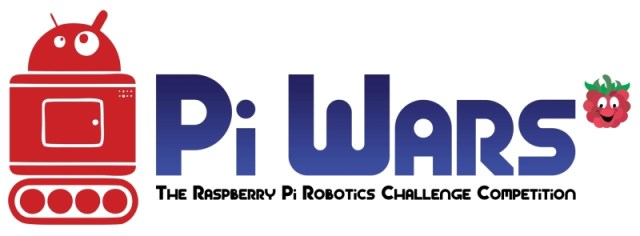

Home
GCC Starts Tomorrow!
- Details
- Published on Tuesday, 13 September 2016 09:30
- Written by Edward Powell
- Hits: 46
I hope everyone has had a fantastic break over the summer. We will be kicking off the first session of GCC tomorrow evening (Wednesday 14 September, 19:00-20:00) but *please note* we will be in L27 this year (where we had the last couple of session of last year).
We have some cool new stuff to get into this year. As well as extending you python skills, we should have access to Unity 3D game development using the new computer suite. I’ve also entered us into the PiWars competition early next year (1 April, 2017 in Cambridge). This will involves us designing, building and programming an autonomous robot to compete in various challenges. Plenty of interesting stuff for everyone! See you there…
News Flash: GCC moved to L27
- Details
- Published on Wednesday, 13 July 2016 16:19
- Written by Edward Powell
- Hits: 134
Last minute change of location for tonight’s meeting because of work going on our usual computer lab.
{kind=link}
GCC will be in L27 (just around the corner) from 19:00 – usual time.
Please bring your own laptop if you can because we won’t have access to our usual school PCs.
Crash, Bang, Wallop! – Collisions
- Details
- Published on Wednesday, 13 July 2016 11:05
- Written by Edward Powell
- Hits: 143
 This
session we are going to add collision detection between our particles
and make them ‘bounce’ off one another. This will actually come down to 3
separate tasks.
This
session we are going to add collision detection between our particles
and make them ‘bounce’ off one another. This will actually come down to 3
separate tasks.
Firstly we need to know when to particles have collided (collision testing, or detection).
Secondly we need to change the behaviour of the particles to respond to the collision - for now this will simply be to make them bounce apart.
Thirdly we need to catch a tricky problem common to all physics simulations – stickiness! Because we will be testing for collisions at discrete moments in time (whenever our collide function is called in the main game loop) there are going to be occasions where we have just missed the actual moment of collision. At this point our particles will be overlapping and begin to repeatedly trigger our collision test make the particles ‘bounce’ constantly in opposite directions each call – the visual effect of this will be to make the particles appear stuck together. To avoid this problem we will also add a bit of code to ensure that, in addition to causing the particles to bounce, we also make sure we remove any overlap.
Checking all the particles once, but only once!
Lets start with how we are going to call our collision code. Naively, for each particle we could just insert a second loop to check against the particle list particle by particle – but wait… A simple nested loop will actually check every *pair* of particles twice – A with B, and then later B with A. We want to avoid this duplication as well as avoid checking particles against themselves – A with A and B with B etc.
To achieve this we will use a modified internal loop that only checks the particle against the other particles *that are later in the list*. To do this we need to modify the way we loop through the list in the outer loop so that we can keep track of the position in the list of the particle we are currently checking. Find the existing update-draw loop for each particle and replace it with this code:
for i, particle in enumerate(my_particles):
particle.move()
particle.bounce()
for particle2 in my_particles[i+1:]:
collide(particle, particle2)
particle.display()
Can you see how this works? Enumerating the particle list means that the variable i will keep track of the index of each particle in the list as we iterate through it. We can use i to begin the nested for loop from 1 place further on in the list than the particle being tested. The function that we call – collide – will test to see if the pair of particles are in collision and act upon them if they are. Let’s look at that next.
Collision Testing & Handling
The collide function should be added under the existing findParticle function, before the Particle class definition. Here is the collision code in its entirety:
def collide(p1, p2):
dx = p1.x - p2.x
dy = p1.y - p2.y
dist = math.hypot(dx, dy)
if dist < p1.size + p2.size:
tangent = math.atan2(dy, dx)
angle = 0.5 * math.pi + tangent
angle1 = 2*tangent - p1.angle
angle2 = 2*tangent - p2.angle
speed1 = p2.speed*elasticity
speed2 = p1.speed*elasticity
(p1.angle, p1.speed) = (angle1, speed1)
(p2.angle, p2.speed) = (angle2, speed2)
# Move overlapping particles apart
separation = (p1.size + p2.size - dist) / 2.0
x_separation = math.sin(angle) * separation
y_separation = math.cos(angle) * separation
p1.x += x_separation
p1.y -= y_separation
p2.x -= x_separation
p2.y += y_separation
Initially you can see that we simply find the difference in x positions (dx) between the particles’ centres and the difference in y (dy). We use basic Pythagoras to find the distance between the centres of the particles (the hypotenuse of the dx dy triangle).
The collision test is now simply to see if this distance is less than the combined sizes of the particles – this should all be familiar to those of you who worked through the asteroids game.
If there is a collision, we change each particle’s movement angle and make them appear to bounce – I will go through the theory in the session.
Parting is such sweet sorrow
Finally, we need to deal with the ‘sticky’ problem of intersecting. If, at the moment we check them, the particles have already overlapped, then simply changing their speeds and angles is going to leave us in a tricky state. On the very next loop around our code, and despite the fact that they are now moving apart, we may well find them in collision again (because they were overlapped) and ‘bounce’ them again… and again… and again. This causes a very obvious glitch. To solve it we must ensure that we not only leave our particles moving apart, but also ensure that they are forcibly separated before the next time around the loop. We do this in the code by finding the separation required to ensure that the particles are *not* overlapped and then we simply force their positions apart by setting the particles’ x y values directly.
Once you have the code working, try commenting this section of code out and see what happens without it, Can you see and understand why the problem occurs? It’s a good one to think about as similar issues can often turn up in timing, or sampling, loops.
Projects for the Holiday
Hopefully you can see that you have an interesting ‘engine’ for a whole variety of games at the end of this session – see what you can do with it over the summer and I look forward to playing some of your games next term.
Angry Circles
- Details
- Published on Wednesday, 06 July 2016 11:24
- Written by Edward Powell
- Hits: 155
 For
the next couple of weeks I though we might explore the rudiments of
physics simulators and I was inspired by the excellent tutorials from Peter Collingridge
on the topic. We have covered all the basic python tools we need
already, so I think we can leap in with a fairly functional demo which
will allow you to fling some 2D circular shapes (we’re calling them
particles) around using the mouse. The particle implementation is also
an excellent use of the concept of Classes we discussed a few weeks ago.
In the code below you can see how we group together all the data and
behaviour (the functions or methods) of a particle in one piece of code
that defines a Particle class and then create lots of ‘instances’ of
particles – each has the same structure (making all the management code
much easier) but they all maintain own specific data values - positions,
speeds and directions etc. This is perhaps the simplest (but still very
powerful) benefit of using classes – we will come onto other benefits
in due course.
For
the next couple of weeks I though we might explore the rudiments of
physics simulators and I was inspired by the excellent tutorials from Peter Collingridge
on the topic. We have covered all the basic python tools we need
already, so I think we can leap in with a fairly functional demo which
will allow you to fling some 2D circular shapes (we’re calling them
particles) around using the mouse. The particle implementation is also
an excellent use of the concept of Classes we discussed a few weeks ago.
In the code below you can see how we group together all the data and
behaviour (the functions or methods) of a particle in one piece of code
that defines a Particle class and then create lots of ‘instances’ of
particles – each has the same structure (making all the management code
much easier) but they all maintain own specific data values - positions,
speeds and directions etc. This is perhaps the simplest (but still very
powerful) benefit of using classes – we will come onto other benefits
in due course.
Take a look at the code below. At the bottom you should by now recognise the absolutely standard game loop – with the usual input->update->draw cycle. I hope you will see it is surprisingly short and very readable! This is a good indication of the well structured code above. In the middle of the code, after we define a couple of helper functions, is the definition of the class (make sure you get your indenting right here – the class’ functions must be indented inside the class level. The interesting aspects of the maths I will cover in tonight’s session – but it all comes down to some very simple sin, cos, tan usage and good ol’ Pythagoras.
import pygame import random import math
background_colour = (255,255,255) (width, height) = (400, 400) drag = 0.999 elasticity = 0.75 gravity = (math.pi, 0.2)
def addVectors(vector1, vector2):
angle1 = vector1[0]
length1 = vector1[1]
angle2 = vector2[0]
length2 = vector2[1]
x = math.sin(angle1) * length1 + math.sin(angle2) * length2
y = math.cos(angle1) * length1 + math.cos(angle2) * length2
angle = 0.5 * math.pi - math.atan2(y, x)
length = math.hypot(x, y)
return (angle, length)
def findParticle(particles, x, y):
for p in particles:
if math.hypot(p.x-x, p.y-y) <= p.size:
return p
return None
class Particle():
def __init__(self, x_y, size):
self.x = x_y[0]
self.y = x_y[1]
self.size = size
self.colour = (0, 0, 255)
self.thickness = 1
self.speed = 0
self.angle = 0
def display(self):
pygame.draw.circle(screen, self.colour, (int(self.x), int(self.y)), self.size, self.thickness)
def move(self):
(self.angle, self.speed) = addVectors((self.angle, self.speed), gravity)
self.x += math.sin(self.angle) * self.speed
self.y -= math.cos(self.angle) * self.speed
self.speed *= drag
def bounce(self):
if self.x > width - self.size:
self.x = 2*(width - self.size) - self.x
self.angle = - self.angle
self.speed *= elasticity
elif self.x < self.size:
self.x = 2*self.size - self.x
self.angle = - self.angle
self.speed *= elasticity
if self.y > height - self.size:
self.y = 2*(height - self.size) - self.y
self.angle = math.pi - self.angle
self.speed *= elasticity
elif self.y < self.size:
self.y = 2*self.size - self.y
self.angle = math.pi - self.angle
self.speed *= elasticity
screen = pygame.display.set_mode((width, height))
pygame.display.set_caption('Angry Circles')
number_of_particles = 3
my_particles = []
for n in range(number_of_particles):
size = random.randint(10, 20)
x = random.randint(size, width-size)
y = random.randint(size, height-size)
particle = Particle((x, y), size)
particle.speed = random.random()
particle.angle = random.uniform(0, math.pi*2)
my_particles.append(particle)
clock = pygame.time.Clock()
selected_particle = None
running = True
while running:
clock.tick(20)
for event in pygame.event.get():
if event.type == pygame.QUIT:
running = False
elif event.type == pygame.MOUSEBUTTONDOWN:
(mouseX, mouseY) = pygame.mouse.get_pos()
selected_particle = findParticle(my_particles, mouseX, mouseY)
elif event.type == pygame.MOUSEBUTTONUP:
selected_particle = None
if selected_particle:
(mouseX, mouseY) = pygame.mouse.get_pos()
dx = mouseX - selected_particle.x
dy = mouseY - selected_particle.y
selected_particle.angle = 0.5*math.pi + math.atan2(dy, dx)
selected_particle.speed = math.hypot(dx, dy) * 0.1
screen.fill(background_colour)
for particle in my_particles:
particle.move()
particle.bounce()
particle.display()
pygame.display.flip()